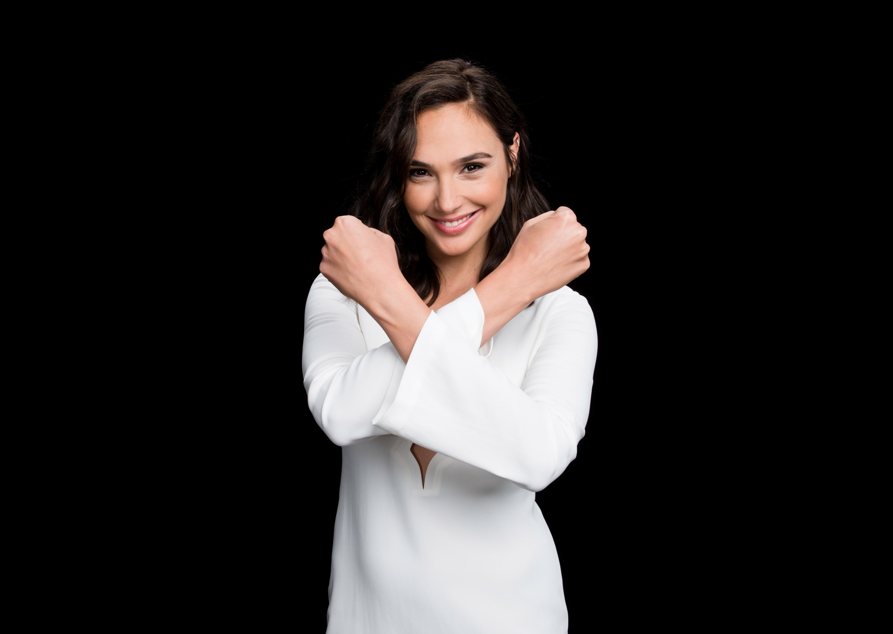
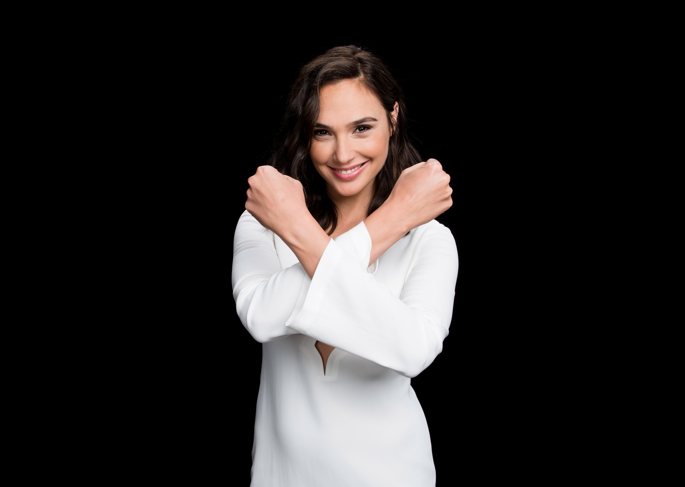

My Story
Actress Gal Gadot first attracted notice as the winner of the Miss Israel competition in 2004. After undertaking two years of military service, she studied law before pursuing acting opportunities. Fast & Furious (2009), the fourth installment of The Fast and the Furious franchise, was her first film role. Gadot was eventually tapped to play the DC Comics superhero Wonder Woman on screen, earning praise for her leading performance in the 2017 box-office hit Wonder Woman.
Gadot was born on April 30, 1985, in Rosh HaAyin, Israel. Her father worked as an engineer and her mother was a teacher. Gadot was an athletic child, studying dance and playing several sports in her youth. One of her first career ambitions was to be a choreographer, she told Vanity Fair.
 
